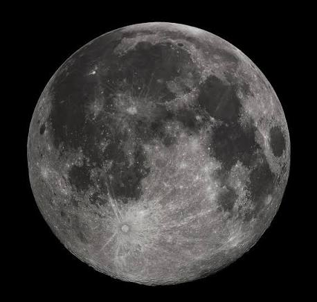

Luna è l'unico satellite naturale della Terra. Si tratta di un corpo celeste roccioso e privo di atmosfera, che orbita intorno al nostro pianeta a una distanza media di circa 384.400 chilometri.
TORNA ALLA PAGINA INIZIALE